Rune Healing
Cards
A 33-card deck that brings Nordic runes together with the seven chakras, designed with divination teacher Miranda.
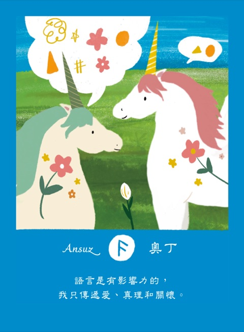

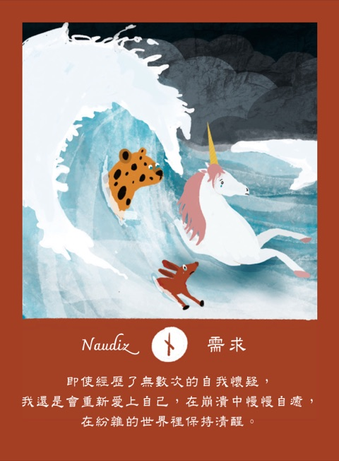


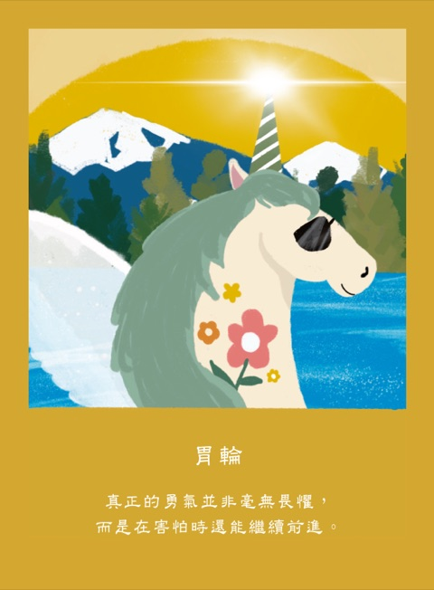
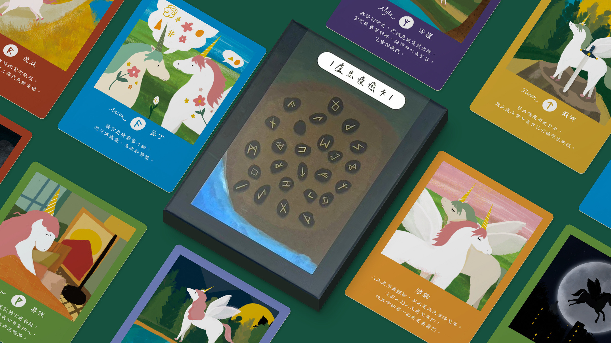
About
the deck
Rune Healing Cards is a deck that combines Nordic runes with the seven chakras. I designed it together with divination teacher Miranda; there are 33 cards in total.
The deck is built around the adventure of a unicorn in a Nordic forest. Each card carries a healing line written by Miranda, paired with an illustration of the meaning it stands for.
We wanted anyone to be able to use it without divination experience: ask for advice when you feel lost, or draw one card each day and carry it with you. Through simple guidance, we hope people find a little inspiration and calm in everyday life.
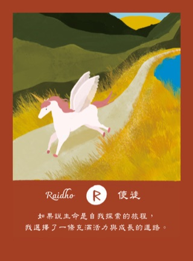
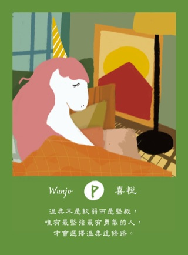
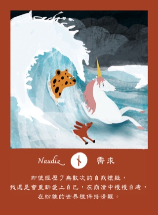
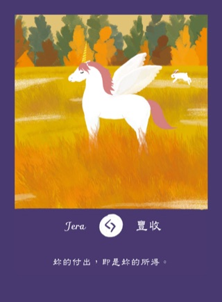
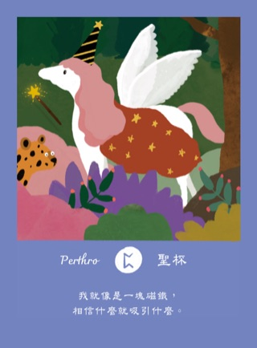
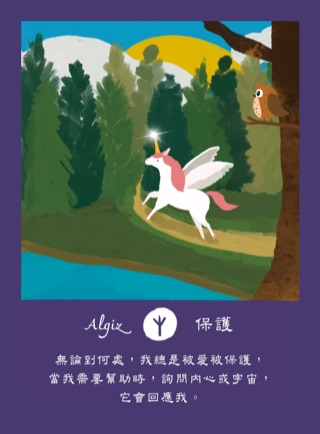
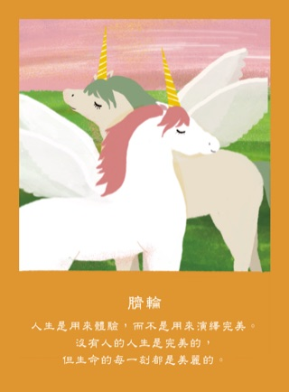
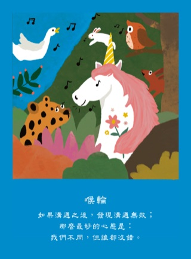
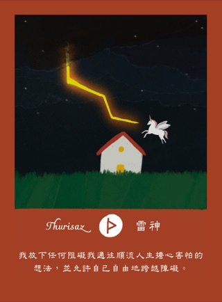
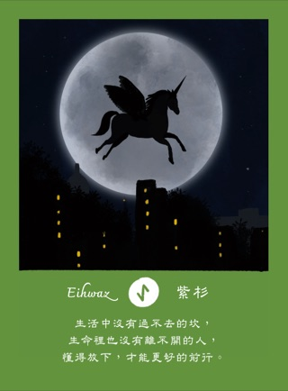
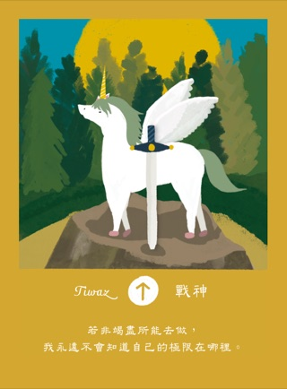
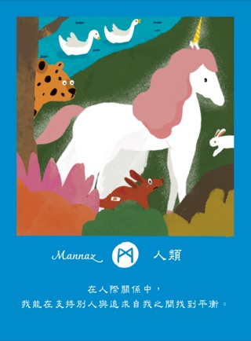
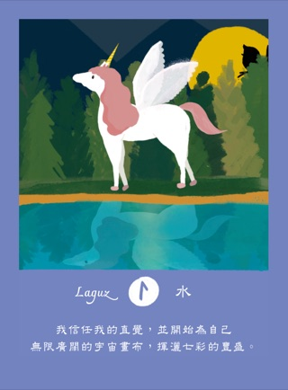